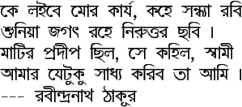
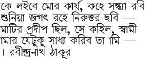

Input text:
ke la_ibe mor kaaJa^r, kahe sandhyaa rabi \\ shuniYaa jagat.h rahe niruttar chhabi | \\ maaTir pradiip chhila, se kahila, sbaamii \\ aamaar JeTuku saadhya kariba taa aami | \\ --- rabiindranaath Thaakuur
|
In the ItxBeng font, the text produces:
 |
|
In the bwti font, the above text produces:
 |
2009-12-04
ITRANS Home Page: http://www.aczoom.com/itrans/